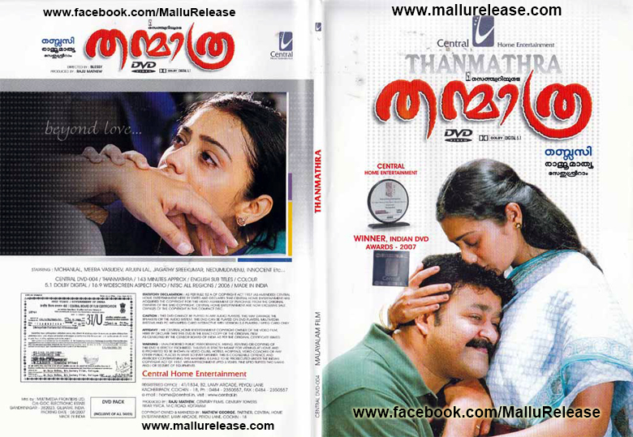

Thanmaatra is the best movie from India to attempt at Alzimers disease.
Everyone from that lil kid to the lead was cherry picked for the roles they'd played.
I love the way the movie glows. From the normal life of a middle-class man elwho enjoys the smallest of things to a person suffering from never Alzimers disease.
Director Blessy,made sure that the audience stayed connected to all the events and happenings which worked very well so that we wept when they did, laughed alongside and had aheavy heart for the losses they'd suffered.

After the devastating events of Avengers: Infinity War (2018), the universe is in ruins.
With the help of remaining allies, the Avengers assemble once more in order to reverse Thanos' actions and restore balance to the universe.

A struggling salesman takes custody of his son as he's poised to begin a life-changing professional career.